图5-3
计算一个数的平均数
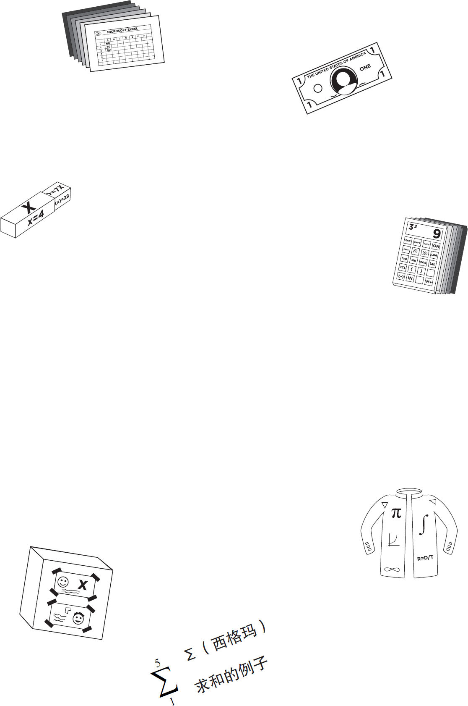
科学计算器很常见，你甚至可以在网络上免费使用它。尽快学会如何使用它，可以帮助你学习数学基础知识和技能并节省你的宝贵时间，还能帮你执行高级操作。在某些情况下，甚至可以将你的成果用图形的形式展示出来。
这一节将向你展示本书前面所介绍的基本原理、计算公式和函数的操作步骤，并向你展示一些高级操作。
使用科学计算器可以将你的数学能力提升到一个更高水平。
科学计算器上需要查找的东西：
■注意下面的建议和提示，在使用前请你熟悉自己的计算器上的特定的操作键和函数选项。
■殊功能键存取：大多数键可以执行多个函数，你可以通过按键来访问这些文件，见图5-1。
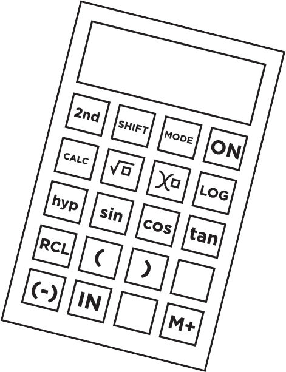
图5-1
■理解（-）和-键的区别。第一个是负号，第二个是减法操作。
■学习如何存储公式中的变量。
■学习如何使用数字输入函数等价数，如f（x ）到x 。
例如：
■找到你经常要用的基本键，如幂键（用于指数运算）、平方根键和逻辑键，见图5-2。
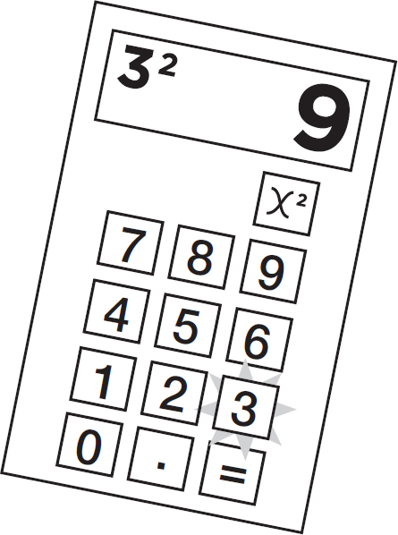
图5-2
X 2 ：X 的2次幂就是用自己乘以自己
32 ＝3×3＝9
■查找统计键，例如平均值，并学习如何使用它。在某些情况下，你必须输入数字并选择求和键。在计算器中输入数据值，然后选择平均值，见图5-3。
图5-3
计算一个数的平均数
■图5-4介绍了一个有用的方法，在计算器上用勾股定理计算图上两点之间的距离。
你可以用勾股定理求解图上两点之间的距离值。
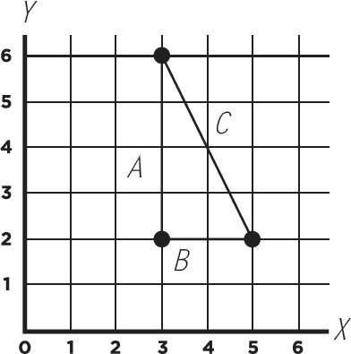
图5-4
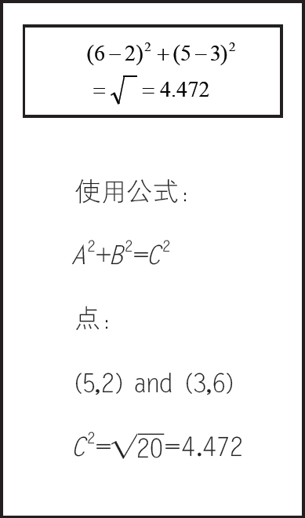
■虽然平均值函数提供了关于数据集的信息，但是你可能还想进一步查看组内标准差。组内标准差提供了这组数据平均值的离散程度，展现了这组数据的质量和性能，见图5-5。

图5-5
计算一组数字集合的标准差
■你可以在排除风的阻力因素的前提下，用自由落体公式计算物体下落的高度和时间。要求得一个物体坠落的高度，当你知道坠落的时间时，使用此公式：
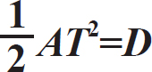
A ＝加速率（每秒10米）
T ＝时间（在本例中为2秒）
D ＝距离（物体坠落的高度）
有了这些信息，就可以计算自由下落的高度，如下：
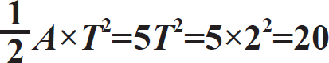
这个物体从20米高处落下，两秒钟后落到地面，见图5-6。
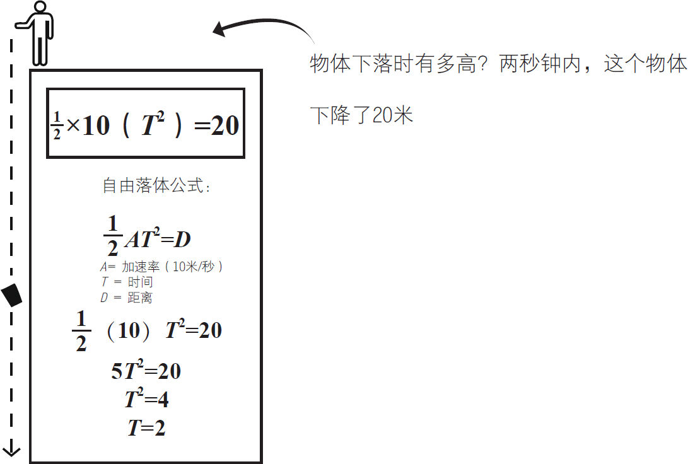
图5-6
■相反，如果你知道下落物体的高度，你就可以计算出下落的时间。
公式：
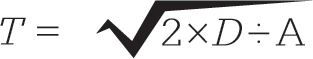
T ＝时间
D ＝距离（10米）
A ＝加速率（每秒5米）
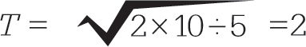
图5-7显示物体从10米高空下落到地面需要两秒钟。
当你知道所处的高度时，计算物体下落的时间。
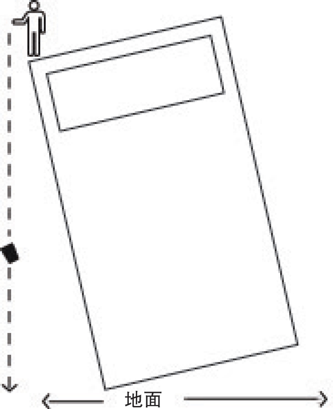
图5-7
■你的科学计算器在计算复杂的公式，比如风寒指数时可以派上用场。
输入下面的风寒指数公式。
公式：
35.74＋（0.6251）T -（35.75）V 0.16 ＋（0.4275）TV 0.16
T ＝华氏温度
V ＝风速（千米/每小时）
下面是计算温度为40度、风速为每小时16千米时的风寒指数的过程：
35.74＋（0.6251）（40）–（35.75）×160.16 ＋（0.4275）×40×16×0.16
＝35.74＋25.00–35.75×1.56＋17.7×16×0.16
＝60.74–55.77＋43.78
＝48.75
风寒指数＝48.75（°F）
■如果计算器包含表函数，则可以生成代数函数。
图5-8显示了使用表函数的计算器生成函数：
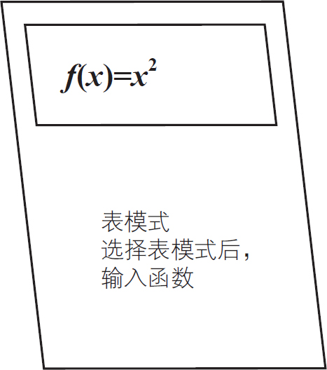
图5-8
f （x ）＝
然后输入x 的函数
在这个例子中输入X 2 （x 平方）
计算器将显示两列
左栏显示1到4的数字
右栏显示x 函数的结果，等于x 平方
继续用你的科学计算器进行各种公式和函数的计算，这样当你需要做题时，你就可以很快知道结果。
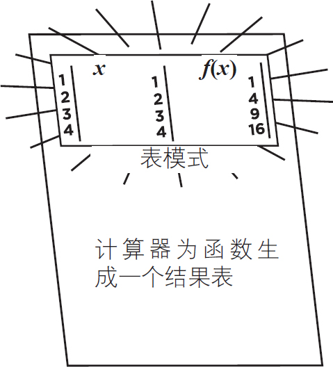
图5-9
在给出求解微分方程和积分方程的方法之前，你应该学习以下两个部分。你将学习如何扩展和化简代数方程以及如何用微积分中的幂规则来进行计算。
在计算数学方程式时，我们常常会用到一种技巧，称为代数扩展与化简。这就像做加法和减法一样，把那些具有相同值的项分散或者合并起来计算，会使过程更加简单。
例1：对方程式（X ＋3）2 进行扩展。
第一步扩展
（X ＋3）2 ＝（X ＋3）（X ＋3）
（X＋3）×（X＋3）
变量和数的平方和。
进一步扩展，用左括号中的项分别乘以右括号中的项
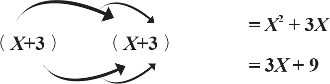
让我们一步一步地相乘：
第一步
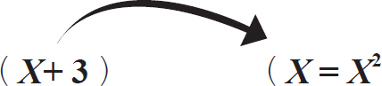
在外面
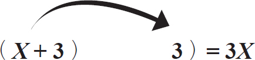
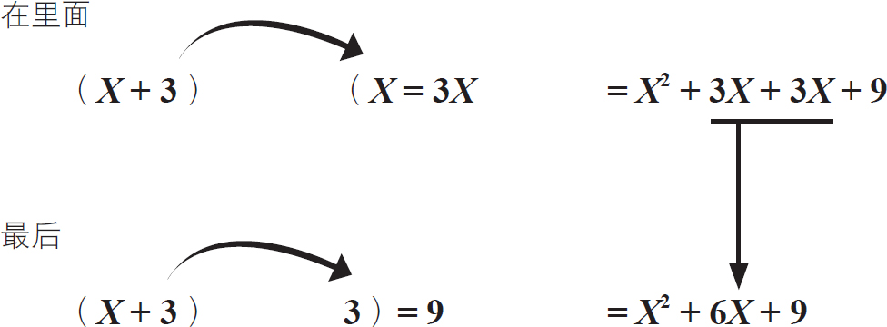
原项（x ＋3）2 扩展为（X 2 ＋6X ＋9）。
所以，（X ＋3）2
扩展：
（X ＋3）×（X ＋3）
再扩展到
X 2 ＋6X ＋9
例2：
在某些情况下，为了方便计算，您可能需要将一个较长的项简化为一个较短的项。例如，将（2xh ＋h 2 ）简化成h （2x ＋h ）。
还原一下，（2x ）×h ＝2hx ，然后h ×h ＝h 2 ，所以它们的和等于2hx ＋h 2 。
这里是在介绍如何简化一个有两个变量和一个常数的项。
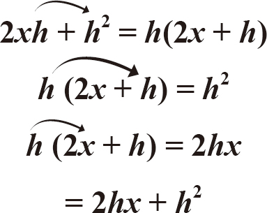
简化就像减少一部分。
简化后的项具有相同的值，但它更易于运算。
微积分中有一些规则可以帮助你节省计算时间。其中一种被称为幂规则。
■在计算微分方程或积分方程时，你将需要使用它。
幂规则
微分
幂规则适用于带幂指数的函数，像变量X 2 （X 的2次方）。为了节省计算这个函数的导数的时间，只需将函数的指数调到变量前作为倍数，然后在原来的指数值减1即可。
例1：求函数的导数f （x ）＝x 2 ，将指数2放在x 前面，再将指数2减1。导数是2倍。
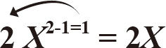
例2：f （x ）＝x 3 变成3x 2 。
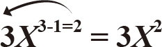
积分
这里是求不定积分的幂规则。
■当积分函数包含幂项时，执行与微分法相反的操作。
例1：X 2 变成
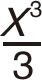
怎么做？首先，将指数值增加1，然后，除以这个增加后的指数值。
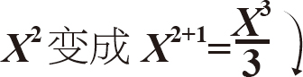
例2：X 3 变成X 3＋1 ＝
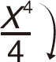
例3：X 4 变成X 4＋1 ＝
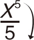
本节将详细说明函数的变化率是如何用微积分确定的。为了便于理解，在不断变化的函数旁边将显示一个线性函数与之进行比较。
如图5-10所示，钟形瓶子旁边变化着的函数曲线，它代表了函数f （x ）＝x 2 。在后面的图解中，水平线叫x 轴，垂直线叫作f（x ）轴（不是y 轴）。如图5-11所示，图上的两点间的连线构成了线性函数，用公式表示，为f （x ）＝x 2 。
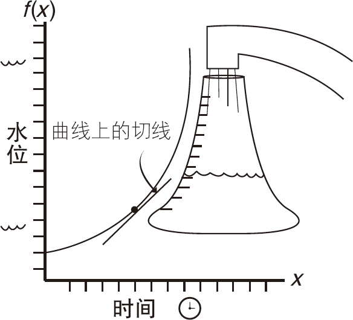
图5-10
瞬时变化率是由一个不断变化的函数决定的。
与一个稳定的线性速率函数相比，如何计算点的瞬时速率。
在这个例子中，y 轴表示为f （x ）或x 的函数的值。
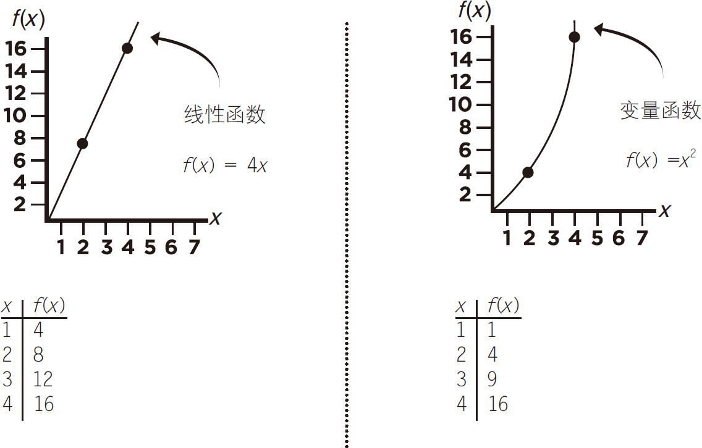
图5-11
在图上，线性函数的两个点表示为（2,8）和（4,16），这两个点也可以由变量［x ，f （x ）］和［x ＋h ，f （x ＋h ）］来表示。右边变化函数上的点在图上表示为（2,4）和（4,16），这两个点也可以由变量［x ，f （x ）］和［x ＋h ，f （x ＋h ）］表示，见图5-12。
线性函数的速率公式：
斜率＝
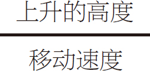
或：
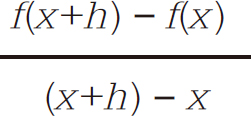
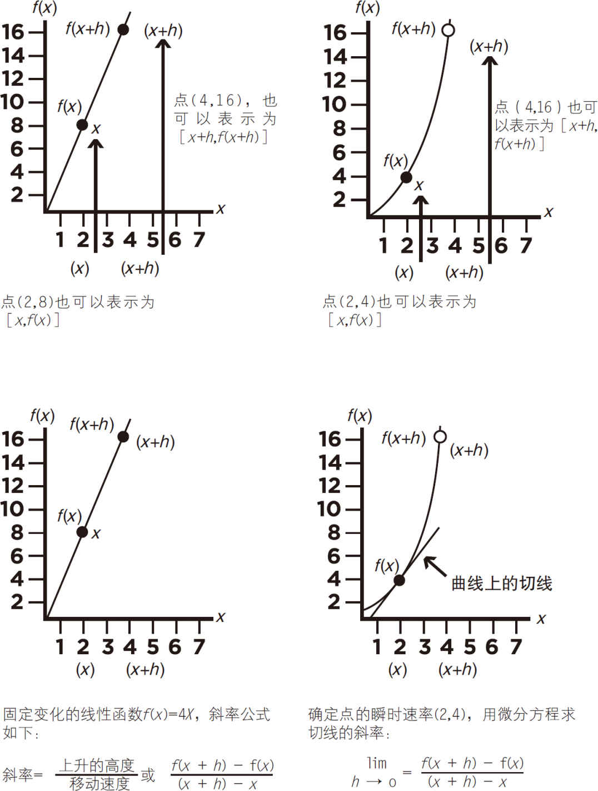
图5-12
求变化函数在点（2,4）的瞬时变化率（也就是曲线的切线斜率），微分方程的用法如下：
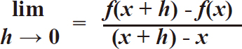
线性函数的上升/水平是（16-8）/（4-2）。对比右边的变量函数，我们将函数的值f（x ）＝x 2 代入变量的微分方程lim h →0＝f（x ＋h ）-f（x ）/（x ＋h ）-x 。
这相当于
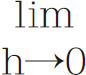
＝（x ＋h ）2 -x 2 /（x ＋h ）-x ，如图5-13所示。你可以取消x 和-x ，只留下h 作为分母。
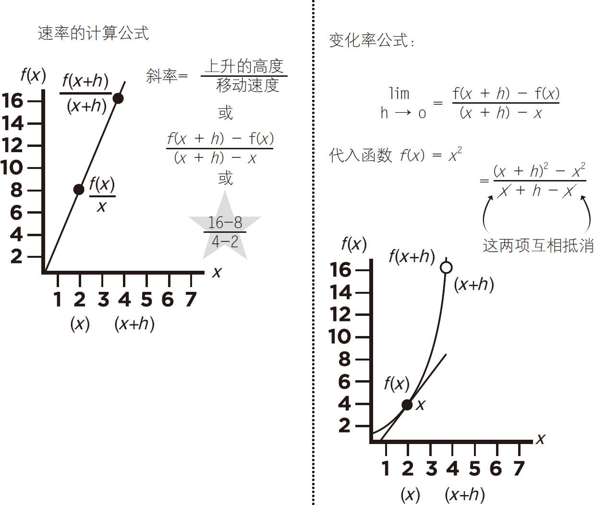
图5-13
线性方程的分数项减小到
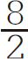
。将方程式（x ＋h ）2 扩展为x 2 ＋2xh ＋＋h 2 。现在正x 2 和负x 2 互相抵消，只留下2xh ＋h 2 ，如图5-14所示。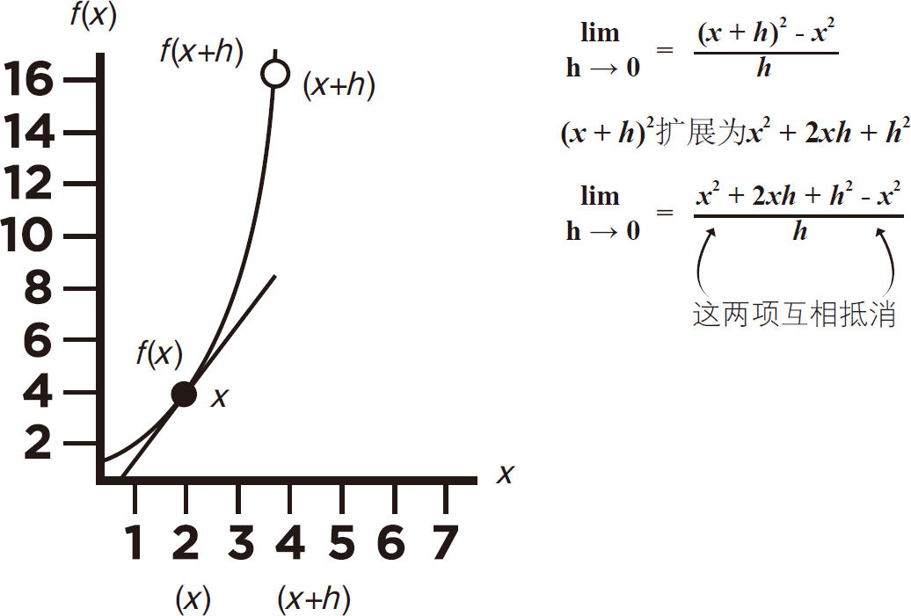
图5-14
图5-15所示，线性方程的值 简化为 等于4。
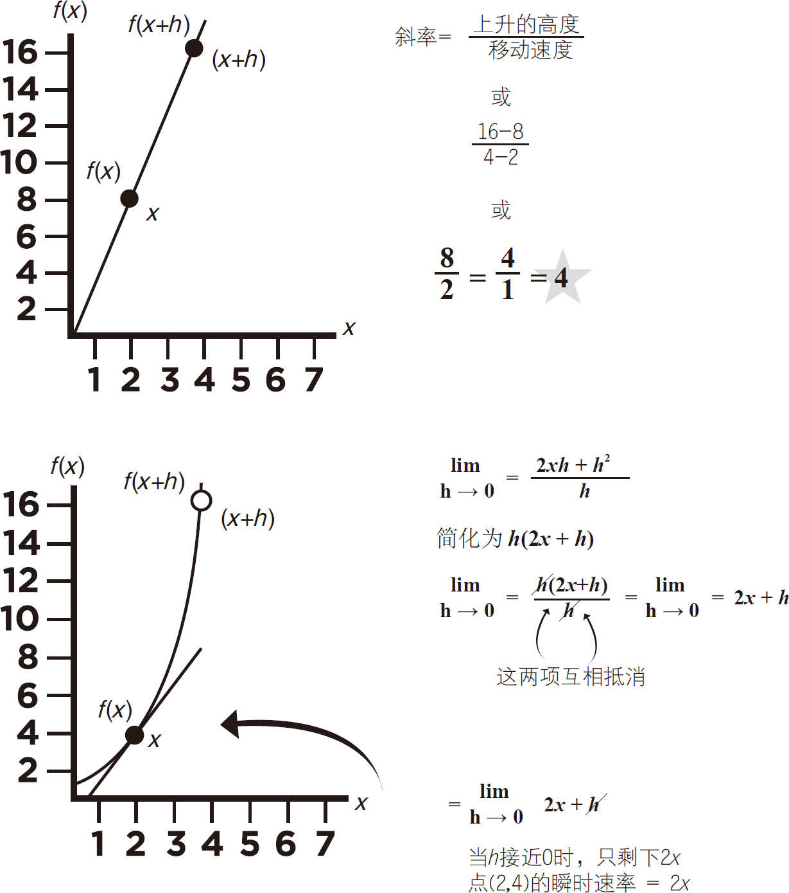
图5-15
极限h →0＝2xh ＋h 2 可以减少到只有2x ，因为h 接近零值。此时，只有2x 。因为图上x ＝2，得出点（2,4）的瞬时速率＝4。
你可以进一步找到这一变化函数图上其他点的瞬时速率。例如，计算点（3,8）的瞬时速率。
微积分提供了一种方法来预测模型模拟的结果。
■你可能想知道为什么计算曲线上的一个点的变化率需要这么多步骤。用线性（直线）函数，你可以使用直线上的任意两个坐标点来解出它的斜率（或速率），因为它是不变的。
■然而，具有变化率的函数，如f （x ）＝x 2 ，在坐标点之间没有直线。计算一个点的速率等于零（因为没有运动或距离）。
■极限可以让你通过在曲线上远离第一点无穷小距离的第二个点找到瞬时速率。
■数学函数可以用来研究位置、生长或衰变的变化模型。包括行星的位置、复利收益、细菌生长、药物吸收、速率、人口增长和放射性衰变。
■用科学计算器计算变化率、积分、微分问题要容易得多。下一节将告诉你如何应用。
用配备了一定功能的科学计算器来计算微分方程是很容易的。下面的示例将向你展示如何计算函数f （x ）＝x 2 在x ＝2时的导数。
（对于特定的键和函数的使用信息，请参考您的计算器用户指南。）
首先选择计算器上的导数函数，该函数通常以d/dx 符号形式显示，如图5-16所示。
例1：求函数［f （x ）＝x 2 ］在点x ＝2处的导数。
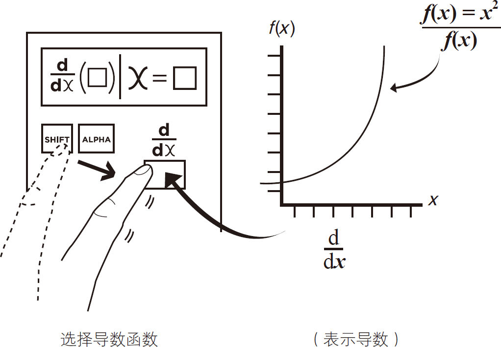
图5-16
接下来，选择x 作为函数变量，见图5-17。
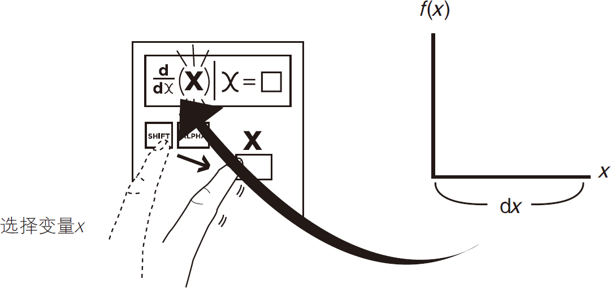
图5-17
然后为变量x 选择2的幂，这就建立了函数f （x ）＝x 2 ，如图5-18所示。
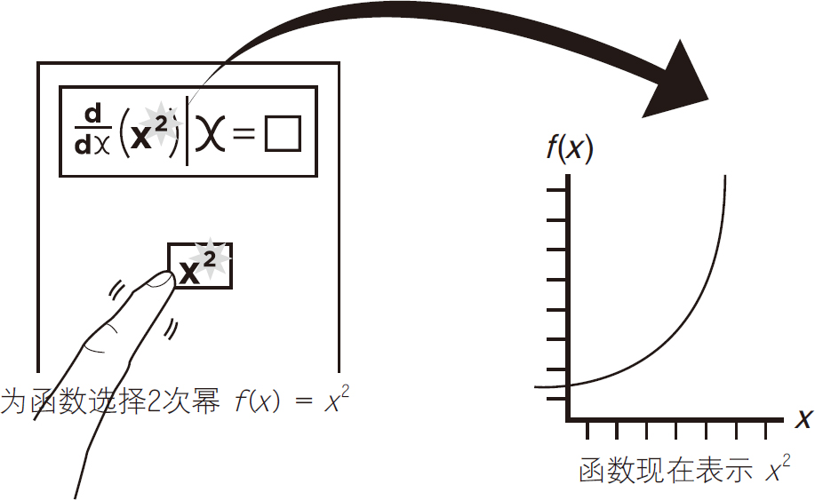
图5-18
将手指移动到“x ＝”部分（会因计算器而异）并选择2，见图5-19。
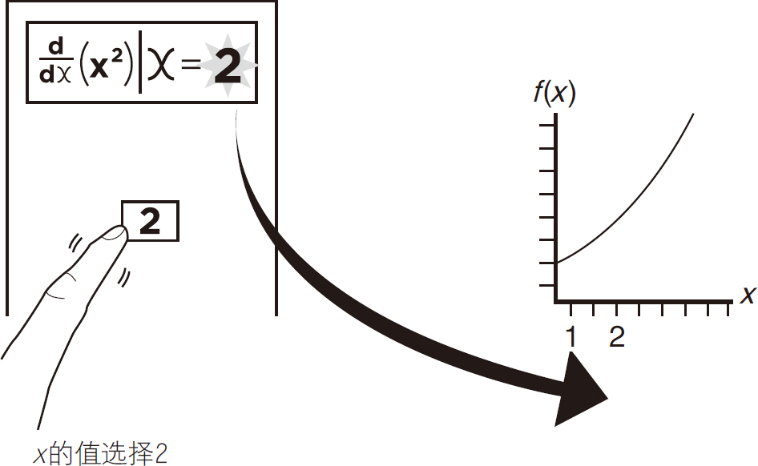
图5-19
最后，选择等号（＝）来计算，见图5-20。
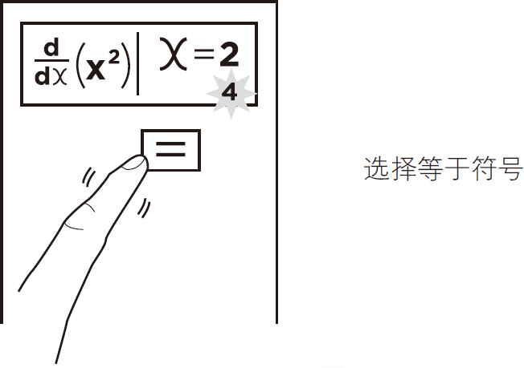
图5-20
如图5-21所示，计算器显示数字4是最后的结果。
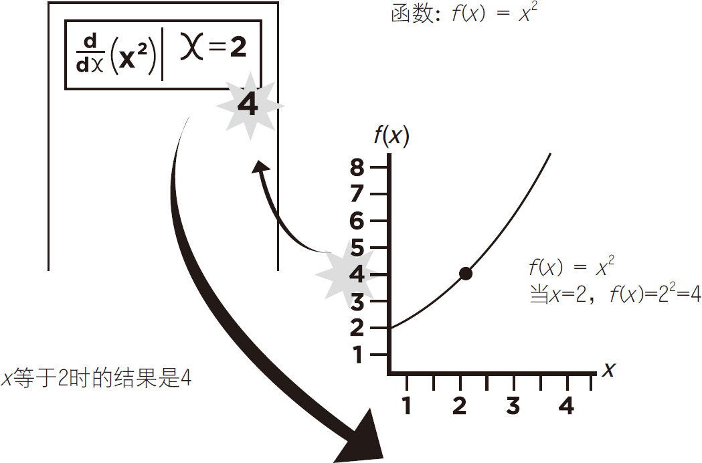
图5-21
用直线几何公式可以求直线或圆围成的平面图形的面积。求曲线图形的面积需要进行积分运算。
为了求曲线下图形的面积，需要计算无限个小矩形的面积和。
以下是方法：
你可以用矩形面积来代替曲线下图形的面积，见图5-22。但这种方法计算出来的结果并不精确。

图5-22
但是，当矩形宽度无限小的时候，近似的结果就很精确了，见图5-23。
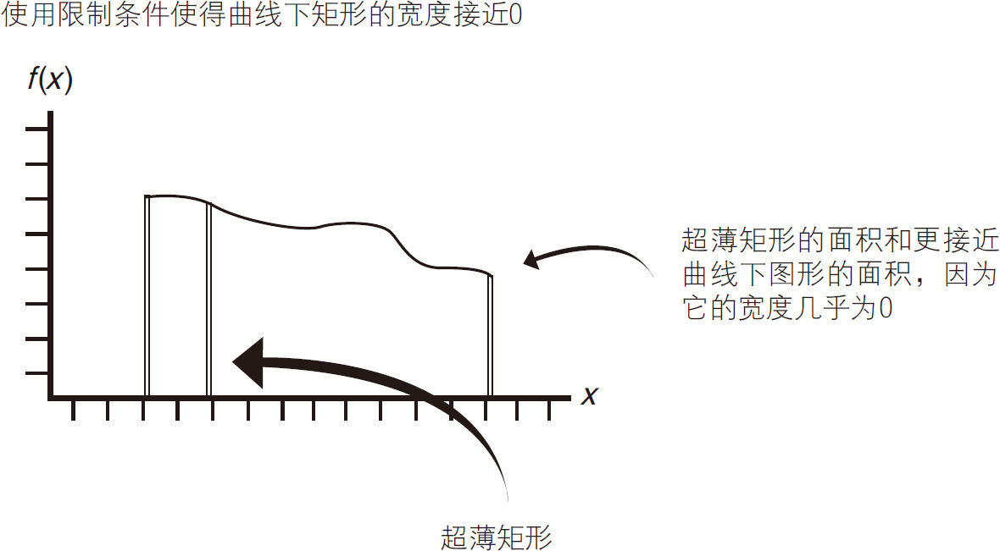
图5-23
当你添加或集成矩形的高度和宽度时，你会计算出曲线下面的确切面积，如图5-24所示。
通过添加或集成所有的超薄矩形区域，得到曲线下图形的面积（面积可以表示距离、利润或资源消耗）。
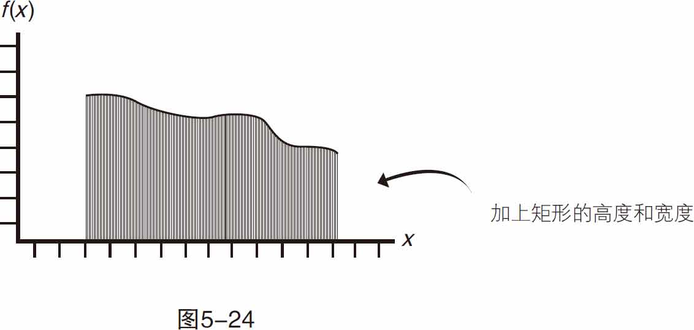
图5-24
图5-25显示了一个定积分公式的例子。积分符号包括一个下限值A 和一个上限值B 。在它旁边，函数用一个变量符号来表示。
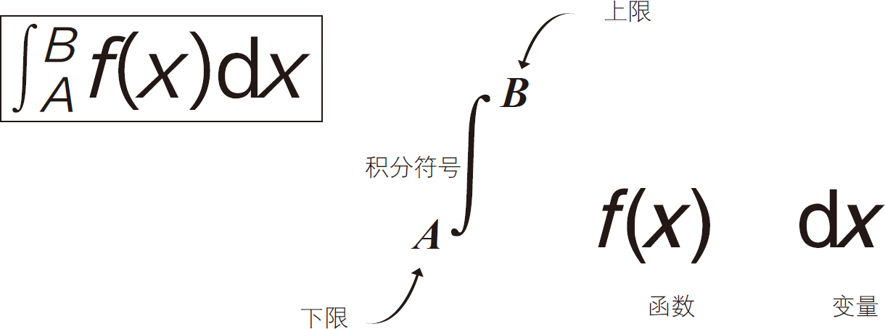
图5-25
这里有一个简单的问题，你可以用积分解决。如果你的汽车以每小时60千米的速度行驶，3小时后汽车行驶了多远？
如图5-26所示，我们将从3点开始记录汽车的行程。积分的下限为3（3点），上限为6（6点）。在这个例子中，函数的一个恒定值为60（千米）。
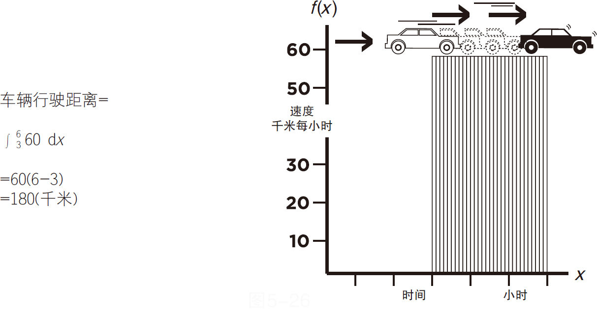
图5-26
对数值进行求和或积分，计算行驶距离。60千米乘以（6-3），这是60千米每小时的速度乘以6小时减去3小时的时间。这辆车匀速行驶了3小时，从出发点开了180千米。
注意：你也可以用简单的算术来得到这个结果，但是这个例子是想告诉你积分公式的定义，以及积分公式中的参数如何设置。这可以帮助你解决更加困难的问题，包括幂变量（指数）的问题。
通过积分，你可以用无穷小的变化量集和来计算总的变化。用微分法，你可以用无限小量代替变化量来计算变化率，如图5-27所示。
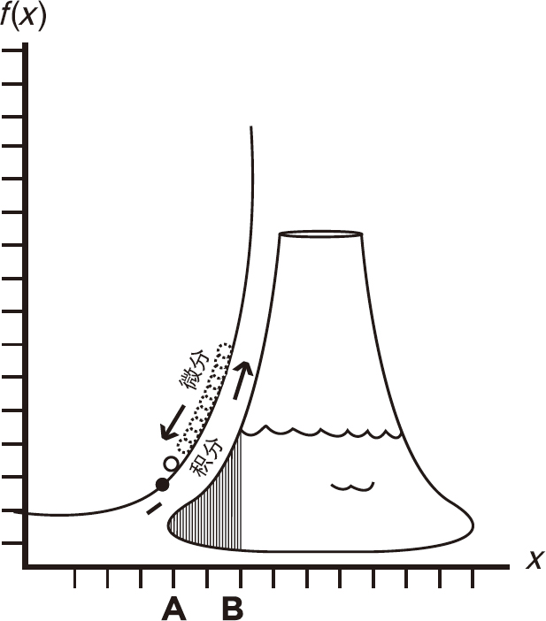
图5-27
积分与微分是相反的（一些积分函数被称为反导函数。）
你可以用科学计算器计算积分方程。
（参考计算器的用户指南找到特定的键，选择正确的功能函数。）
选择如图5-28所示的积分函数。
例1：计算图中积分函数的值，积分区间从0到3。

图5-28
然后输入数字3作为常数值，见图5-29。
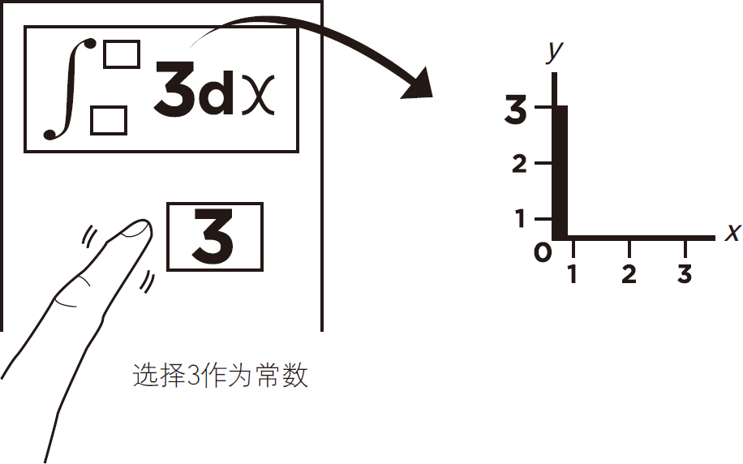
图5-29
选择0作为积分的下限，见图5-30。
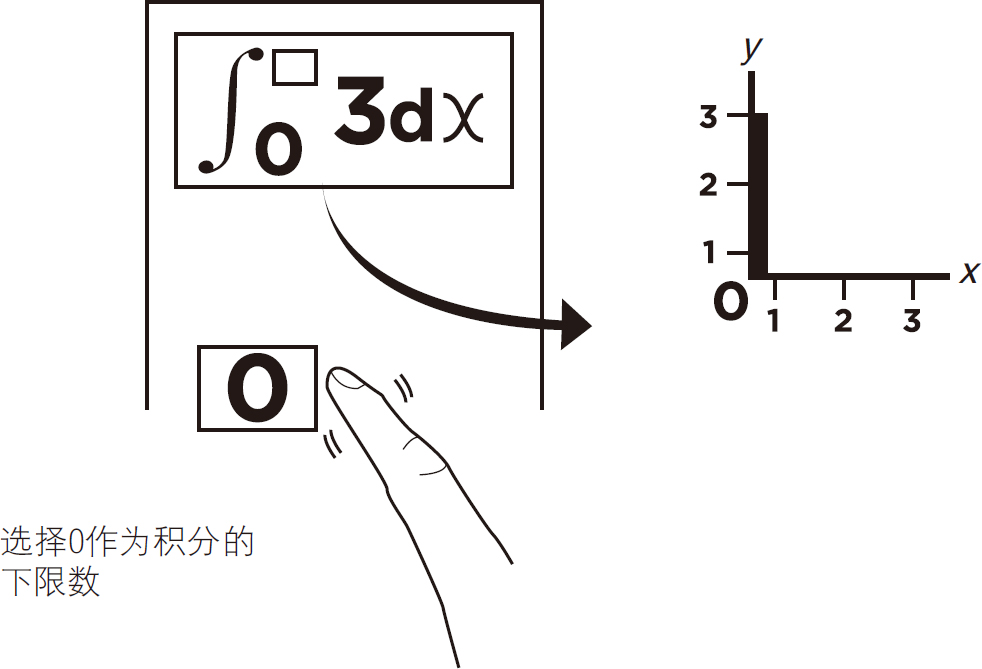
图5-30
然后选择3作为上限值，见图5-31。

图5-31
现在您可以按等号（＝）键来计算积分了，见图5-32。
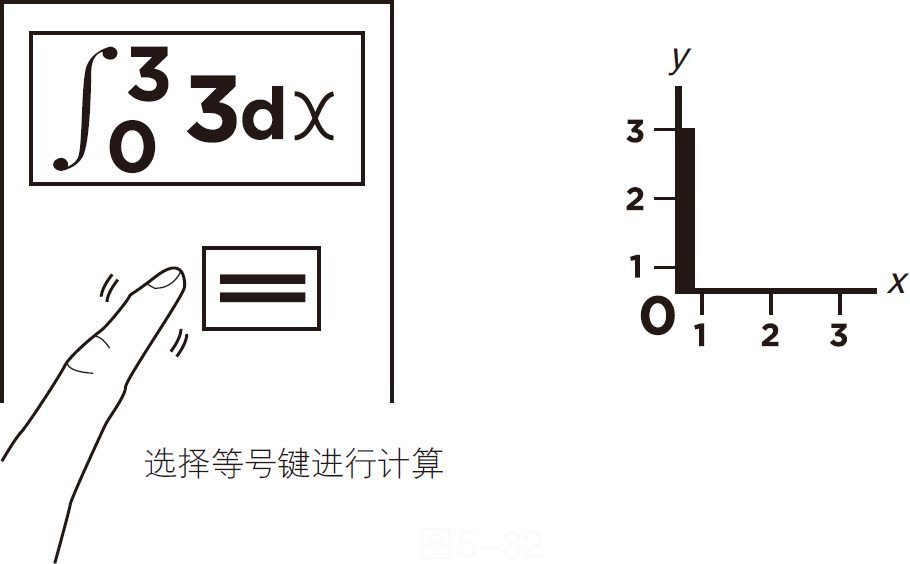
图5-32
图5-33显示了积分值的计算结果是9，还显示了积分公式以供检查。
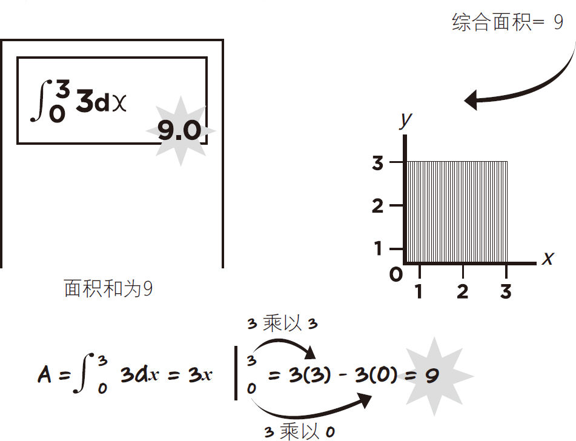
图5-33
这个例子将通过计算幂函数来证明积分的真正能力。你将会看到计算函数f （x ）＝x 2 在x轴上的点0到2的曲线的面积的运算过程。
首先选择积分函数，如图5-34所示。
图5-34
选择变量x，如图5-35所示。
图5-35
例2：在函数f （x ）＝x 2 的曲线下计算区域面积，积分区间从0到2。
接下来选择2幂的按钮，如图5-36所示。

图5-36
将手指移动到上限区域并输入数字2，如图5-37所示。
图5-37
向下移动到下限区域并选择数字0，如图5-38所示。

图5-38
按等号键（＝）求和，积分后曲线下的区域面积为 。下边还显示了积分公式以供检查，见图5-39。
图5-39
总和是
函数曲线下的面积f（X ）＝x 2 ，积分区间从0到2。
注意：积分与微分相反（一些积分函数被称为反导函数。）
通过积分，你可以将无穷小的变化量求和来计算总的变化。
用微分法，你可以除以无穷小的变化量来近似计算变化率。
需要准备的东西：
►纸板
►回形针或黄铜纸扣
►CD或DVD
►剪刀
►铅笔
►透明胶带
►纸
你可以使用下一页的插图作为实验参考，并按步骤操作。
首先，用纸板制作一张CD或DVD大小的圆盘，或者用一个罗盘来创建直径为3厘米的圆盘，如图5-40所示。
图5-40
接下来，裁剪出如图5-41所示的矩形盖，包括“窗口”孔或者，你可以把一支笔固定在虚线上，把窗孔部分剪掉。
图5-41
把盖子对折，在窗孔下方打一个洞，如图5-42所示。也在圆盘的中心打一个孔，如图5-43所示。把圆盘小心地放在盖子上，并从盖子的外面和盘上推上黄铜纸扣件或回形针固定夹，如图5-44所示。
图5-42
图5-43
图5-44
按顺时针方向拨盘，选择一个积分上限数字，并找到与曲线下显示的区域相匹配的方程，见图5-45。
图5-45
转动刻度盘查找曲线下的面积公式。
通过将无限个小矩形区域面积求和，可以计算函数曲线的面积。“面积”可以表示物理面积、利润增益、衰变损耗等。
定积分公式
例1：汽车以每小时60千米的速度行驶了三个小时，求汽车行驶的距离？
例2：计算函数f （x ）＝x 2 为从0到2曲线下的面积。

从0到2曲线下的面积＝2.7
例1：x 2 变成 或
例2：x 3 变成 或
下图是实验的一个举例说明。
电子表格程序，如微软Excel和苹果的Numbers程序，可以让你用与其他工具不同的方法来执行数学计算以及处理数据。它不仅可以节省时间，还可以让你看到趋势和预测的变化。
最重要的是，你可以在你的演示文稿中插入图形和图表，甚至可以打印出来与他人分享。
如果你的计算机没有安装电子表格程序软件，网上可以免费下载安装。
这个入门版将向你展示一些基本的电子表格形式。这个程序的命令和功能使用的是微软Excel风格，大多数电子表格都用这种风格。（有关特定命令信息，请参阅应用程序的帮助选项。）
电子表格入门
■打开一个新的电子表格文件，你会看到列和行被称为单元格的框，如图5-46所示。你可以在每个单元格中输入数字、字母和其他数据。
图5-46
对于数学函数，Excel将等号（＝）识别为在数字或数据上执行的操作。如果单元格的内容不以等号（＝）开头，则数据可以被视为一个标签（不是用于计算的数字）。
这里有一个更实际的例子：在单元格A1和A2中输入任何你想输入的数字。在单元格A3中，输入＝SUM（A1＋A2）并按回车键，如图5-47所示。
图5-47
单元格A3将显示上面单元格中的数字总和，见图5-48。
图5-48
你可以通过使用如下命令，在列和行中添加更多的数字。单元格A10类型：＝SUM（A1:A9），然后按回车键把从A1到A9所有的数字相加。
注意：在某些情况下，Excel执行从左到右的计算，你必须将数字放在括号内以防止计算顺序出现错误。
例如，命令＝1000-100*5可以得到4500或500的答案。［1000减去100＝900，乘以5等于4500；或1000减去（100乘以5），等于500］。
你将以以下两种方式之一输入该命令：
（1000–100）*5 或1000–（100*5）
■从函数菜单访问Excel提供了更多的内置函数，如图5-49所示。

图5-49
统计函数允许你从某个值的列表中获取信息，并确定平均值（平均值）、中位数（中间）、众数（最频繁）和标准偏差（一组的距离），见图5-50、图5-51和图5-52。

图5-50
图5-51
图5-52
■此外，你还可以在电子表格中插入图形，并添加图表使你的演示文稿更具吸引力，见图5-53和图5-54。
图5-53

图5-54
■键盘上的快捷键有很多。它们允许你选择一组单元格，指定一个命令，或者为你创建一个公式！
■在使用基本命令和函数之后，研究一下电子表格手册和教程，你会发现更多的功能，包括文本和数据函数、日期和时间、数学和三角函数，以及三维统计分析：
►财务公式计算利息，估值、贷款。
►计算器，假设分析，回归分析。
这本书展示了一些实验，它们让数学变得难忘，有趣且易于分享。甚至你可以通过制作更多的DIY项目来激发学习兴趣。
下面的几个例子是你日常生活中可以做的设计：
■制作这本书中出现的数学小测验的巨型版本，并把它们挂在墙上。
■反复温习指导书，特别是不寻常的符号和公式，制作大的、动态的数学符号海报，把它们贴在你的墙上，见图5-55。
图5-55
■从正式学习中休息一下，玩玩图5-56中像“函数轮”这样的数学策略游戏。

图5-56
■廉价的塑料披风、浴帘，如图5-57和图5-58所示。
| 图5-57 | 图5-58 |
■废弃的饼干盒可以制作成滑动代数函数的演示装置，见图5-59和图5-60。
图5-59
图5-60
■不要将你的数学卡片放在抽屉里视而不见。制作一个数学卡片盒：将饼干盒从里面翻出来，重新折叠它，将它们粘在一起，然后切开切口，这样就可以制作成前后滑动的数学卡片，见图5-61。
■如果你精心制作了π杯，制作了滑动代数函数演示装置和一个奇妙的数学卡片盒，将它们与魔术贴（或磁带）放在一起，制作一个移动的秘密数学机器人，如图5-62所示。
图5-61
图5-62
制作一些数学书籍封面，这样你就可以每天温习这些知识了。在这本书的词汇表那一页上画出图像和公式，如图5-63所示。
图5-63
然后折叠顶部和底部部分，在书的正面和封底上滑动，见图5-64。
图5-64
随着时间的推移，当你翻开你的教科书的时候，你会回想起这些数学原理，见图5-65。

图5-65
用测高计测量自己和别人的身高。比赛谁能准确地使用勾股定理和周长公式计算货币的尺寸，如图5-66和图5-67所示。

图5-66
图5-67
测量以上的硬币的直径，计算它们的周长
提示：C ＝πD
周长＝π×直径
然后计算苏打罐和电池这样的普通物体的周长，如图5-68所示。
图5-68
测量易拉罐和电池的直径，计算它们的周长
提示：C ＝πD
周长＝π×直径
不要满足于此，考虑使用更多的方法使数学和物理原理变得可视化。制作玩具、无线电控制车辆、类似乐高的工艺包，以及派对和棋盘游戏，将这些融入数学活动中！